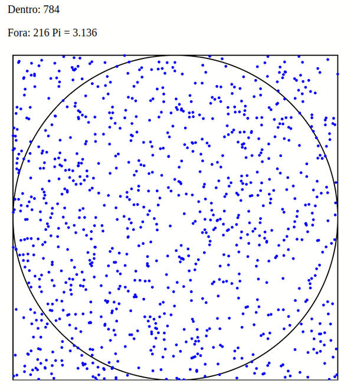

O método de Monte Carlo foi criado por Stanislaw Ulam e John Von Neumann, no esforço de criar a bomba de Hidrogênio, na época da Segunda Guerra.
Consiste em fazer amostras aleatórias do que queremos simular, segundo propriedades e restrições desejadas, e mensurar os resultados. Surgiu numa época em que os computadores também estavam sendo inventados, o que foi uma boa combinação: computadores são excelentes em tarefas simples e repetitivas, como esse tipo de simulação.
Vamos fazer um pequeno exercício.
Imagine um círculo de raio 1, que tem área pi*r^2. Este círculo, inscrito num quadrado de lado 2 (área 4).

A razão entre a área do círculo e a área do quadrado é de pi/4 = 0,78539…
Se eu “disparar” um número de tiros aleatórios neste alvo, e contar quantos pontos ficaram dentro do círculo versus o total de pontos, a proporção tem que ir convergindo para a fórmula calculada. Assim, com um número infinito de tiros, consigo estimar o valor de Pi.
Computacionalmente é fácil fazer a conta. Basta um gerador de número aleatórios.
No Excel, a função “=ALEATÓRIO()” dá um valor entre 0 e 1. Quero um valor entre -1 e 1, então faço apenas uma continha para reparametrizar o resultado: “=2*(ALEATÓRIO ()-0,5)”.
Sorteio os valores x e y, utilizando a fórmula acima.
A seguir, calcular se x e y são menores do que 1 ou não.
A fórmula do círculo é x^2 + y^2 = 1; se x^2 + y^2 for menor que 1, está dentro do círculo, senão, está fora.
=SE(RAIZ(B4^2+C4^2<=1);”Sim”;”Não”)
Conto quantos pontos ficaram dentro e quantos ficaram fora, e vejo a proporção.
Quanto maior o número de amostras, mais próximo de pi/4 = 0,78539 devo chegar.
O Método de Monte Carlo e derivados tem aplicações práticas extremamente valiosas para a indústria, nos dias de hoje. Simulação de eventos discretos, em geral, ajudam a dimensionar o número ótimo de atendentes de um help desk, o tamanho de pátios de armazenagem, número de empilhadeiras de um armazém, e assim sucessivamente.
Lição de casa.
Ao invés de um círculo, aplicar o mesmo método para um losango.

Dica: para um losango como o mostrado, abs(x) + abs(y) <=1.
Veja também:
Forgotten Lore - Ideias Técnicas com uma pitada de filosofia.